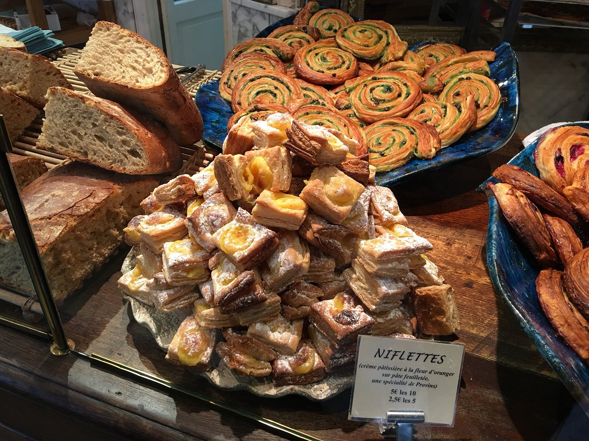
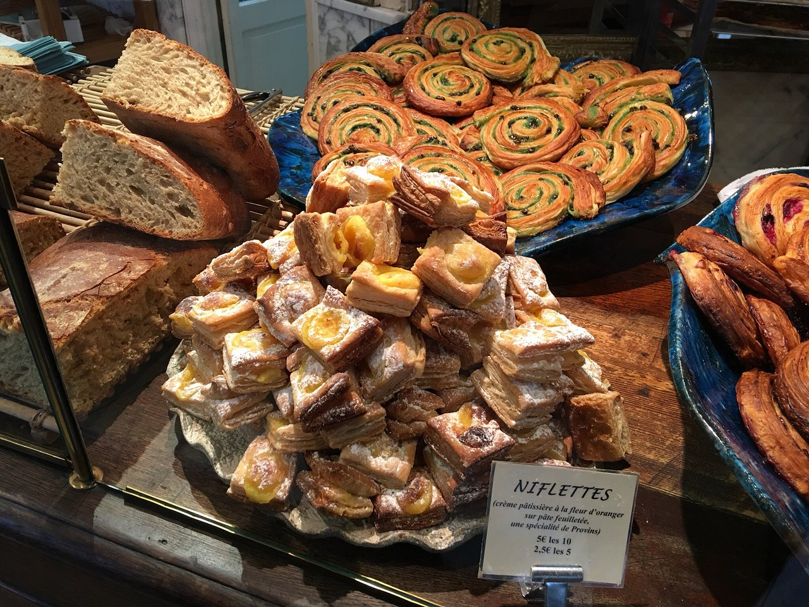

The Bakery
A bakery is an establishment that produces and sells flour-based food baked in an oven such as bread, cookies, cakes, doughnuts, bagels, pastries, and pies. Some retail bakeries are also categorized as cafés, serving coffee and tea to customers who wish to consume the baked goods on the premises. Confectionery items are also made in most bakeries throughout the world. Baked goods have been around for thousands of years. The art of baking was developed early during the Roman Empire. It was highly famous art as Roman citizens loved baked goods and demanded them frequently for important occasions such as feasts and weddings. Because of the fame of the art of baking, around 300 BC, baking was introduced as an occupation and respectable profession for Romans. Bakers began to prepare bread at home in an oven, using mills to grind grain into flour for their breads. The demand for baked goods persisted, and the first bakers' guild was established in 168 BC in Rome. The desire for baked goods promoted baking throughout Europe and expanded into eastern parts of Asia. Bakers started baking bread and other goods at home and selling them on the streets. This trend became common, and soon, baked products were sold in streets of Rome, Germany, London, and more. A system of delivering baked goods to households arose as the demand increased significantly. This prompted bakers to establish places where people could purchase baked goods. The first open-air market for baked goods was established in Paris, and since then bakeries have become a common place to purchase delicious goods and to socialize. By the colonial era, bakeries were commonly viewed in this way. On July 7, 1928, a bakery in Chillicothe, Missouri introduced sliced bread using the automatic bread-slicing machine, invented by Otto Frederick Rohwedder. While the bread initially failed to sell, due to its "sloppy" aesthetic, and the fact it went stale faster, it later became popular. In World War II bread slicing machines were effectively banned, as the metal in them was required for wartime use. When they were requisitioned, creating 100 tons of metal alloy, the decision proved very unpopular with housewives. World War II directly affected the bread industry in the UK. Baking schools closed during this time, so when the war ended there was a lack of skilled bakers. This resulted in new methods being developed to satisfy the world's desire for bread, including chemical additives, premixes and specialised machinery. Old methods of baking were almost completely eradicated when these new methods were introduced and the industry became industrialised. The old methods were seen as unnecessary and financially unsound. During this period there were not many traditional bakeries left.
Best sellers

Lebkuchen and roasted chestnuts, Germany
If you decide to go to Germany on Christmas, you will certainly find numerous and large Christmas markets. Even you can discover some which were founded in the 15th century.
The period during which you can visit these markets can be different. For example, in one town it can be just 2 days, while in other several weeks.
The main attraction of these places is roasted chestnuts. They are sold everywhere. When you feel their delicious smell, you won’t be able to leave any of the numerous markets.
One of the traditional Christmas foods in Germany is Lebkuchen. It is a kind of biscuit with icing and almonds.
Fried carp, Czech Republic
Now, when winter holidays are coming near, Czech markets can suggest you a great choice of fresh carp. People in this country usually buy it in advance and keep it until the holiday.
There are various ideas for cooking this fish. It can be fried or cooked like a fish soup. Another popular dish in the Czech Republic is potato salad.
Buche de Noel, France
This name is translated as “Yule Log” from French. It is connected with the Viking times when it became a tradition to burn a large log on dark nights. It was normally done during the winter solstice. But when the years passed, that tradition was not observed as before.
One of the reasons is cutting down the trees in the forests. To stick to the custom, people created this cake, which is some kind of Swiss roll. You need to fill it with chocolate buttercream. To make it look nice and like a log, grate some chocolate over the cake and add pine needles.

Panettone, Italy
This cake was invented in Italy. The legend tells about one boy who was in love with a girl and wanted to try all ways to get her attention. He chose one of the most creative ways.
The boy made up his mind to bake an amazing and delicious cake. What was it like? He made an incredible high bread loaf.
Its exquisite taste was completed with raisins, lemon zest, and candied orange. Nobody knows the result of the boy’s efforts. But surely it became a traditional Christmas food in Italy.
Making panettone is a long process. You will spend that no less than 3 days. First, it was baked in Milan, but nowadays panettone is made around the world. For example, Latin America is famous for this cake.